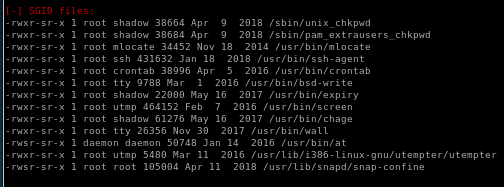
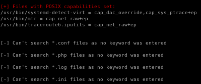

Index
tartarsauce
nmap
http
gobuster
gobuster /webservices
robots.txt
monstra-3.0.4
monstra login (rabbit hole)
default credentials
searchsploit monstra
43348.txt
cmd.php
initial foothold
wpscan
interesting finds
searchsploit gwolle
php reverse shell
webserver
netcat listener
visit exposed link
import python shell, import tab autocomplete and xterm
user
privesc to Onuma
GTFO bin for tar privesc to onuma
user
privesc to root
linEnum
report
system
USER/GROUP
environmental
jobs/tasks
networking
services
software
interesting files
interesting finds
procmon.sh
backuperer
notes
setuid.c
apt search gcc-multilib
upload tar with malicious c code w/ sticky bit preset to tartarsauce
backuperer in action
user/root
lessons learned
interesting files
s


 s
s